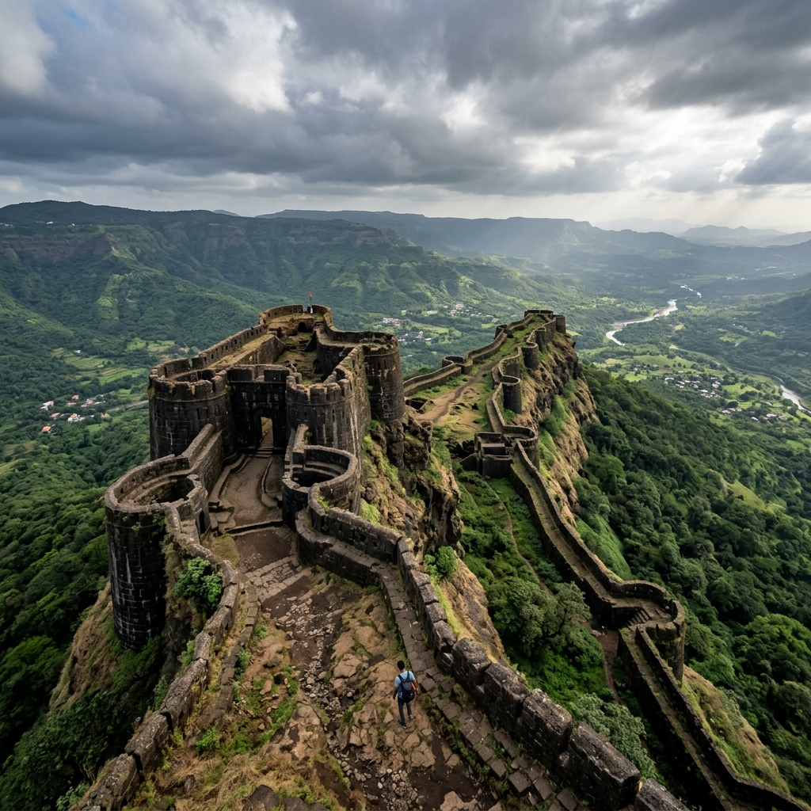

About AMK
Alang Madan Kulang (AMK) is one of the toughest and most challenging treks in Maharashtra, located in the Kalsubai range. The trek covers three forts—Alang, Madan, and Kulang—and includes technical rock climbing sections, rappelling, and long trekking hours.
It is best suited for experienced trekkers seeking a high-adrenaline adventure. The trio of forts rises vertically as dramatic flat tablelands, demanding physical fitness, high mental endurance, and technical coordination under expert guidance.
Trek Type
Extreme Expedition
Requires
Climbing Gear

Major Attractions
Explore the highlights of the three vertical flat forts of AMK.




Travel Guide
Comprehensive routes to reach the base village from Mumbai.
Option 1: Rail & Local Jeep (Ambewadi Village)
Take a Mumbai local train to Kasara station. From Kasara, hire a shared passenger jeep to reach Ambewadi village (~2.5 hours), which serves as the primary base village for the AMK trek.
Cost: ₹300 – ₹500 ApproxOption 2: Transit via Igatpuri
Alternatively, take a train or bus to Igatpuri town. From Igatpuri, hire local private vehicles or hop on scheduled state transport buses heading towards Ambewadi village.
Cost: ₹250 – ₹600 ApproxOption 3: Direct Drive
A scenic ~160 km drive from Mumbai along the Mumbai-Nasik Highway, exiting at Ghoti town towards Ambewadi village. Vehicle parking space is available in the base village.
Essential Information
Everything you need to know for a safe adventure.
Safety Warning
Not suitable for beginners. Highly recommended to go with certified climbing guides. Ropes, harnesses, helmets, and proper safety gear are mandatory for the rock climbing sections.
Essentials
Carry 4–5L water (very important, water sources on top are scarce), professional trekking shoes, sleeping bag, torch/headlamp, climbing gloves, and a comprehensive first aid kit.
Best Time
October to February is ideal when rock surfaces are dry and weather is cool. Strictly avoid climbing the vertical patches during monsoon season due to slippery moss.
Location & Coordinates
Alang Madan Kulang (AMK), Kalsubai Range, Nashik District, Maharashtra, India